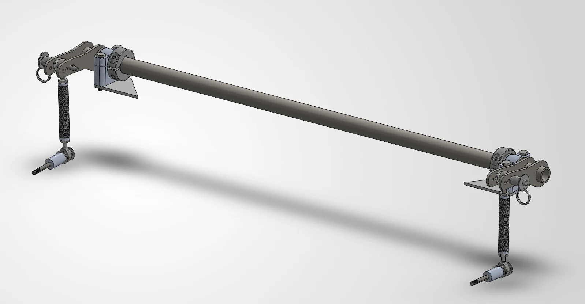
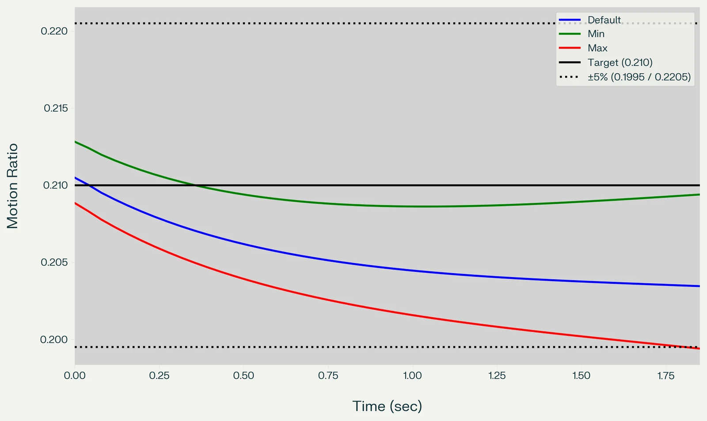
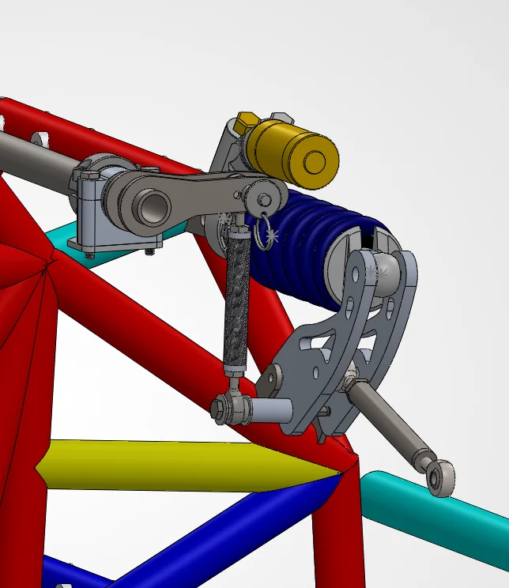
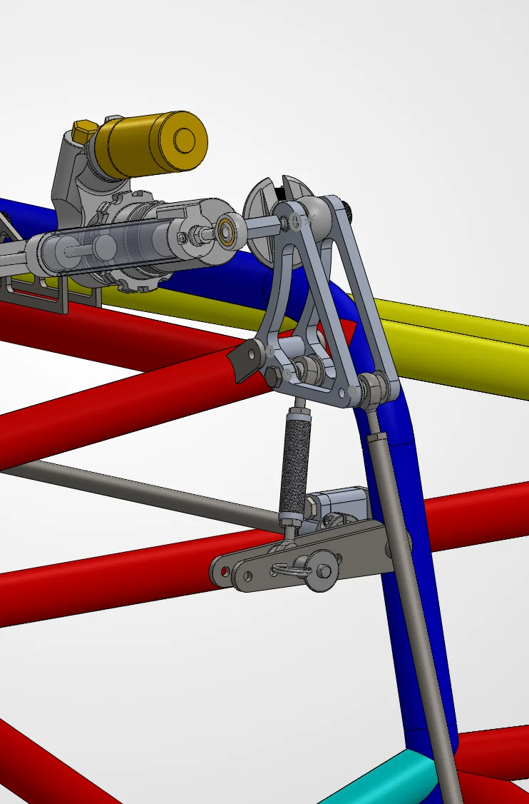
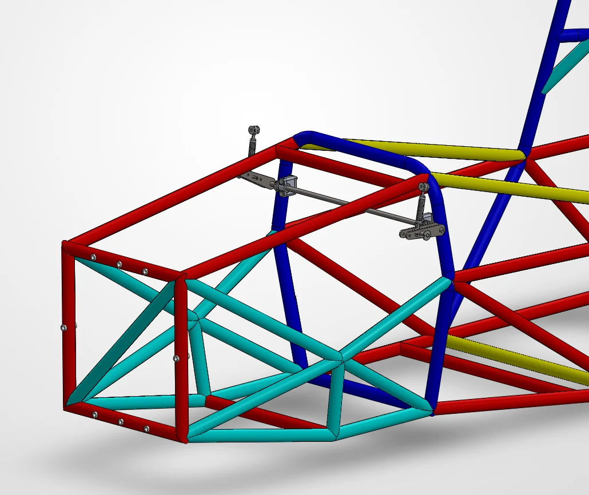
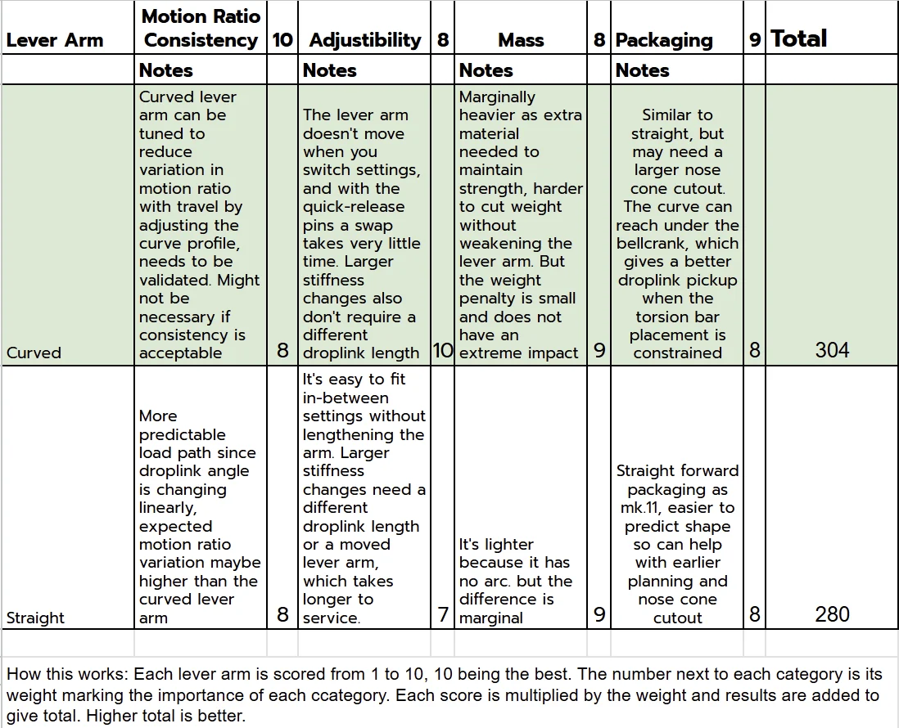
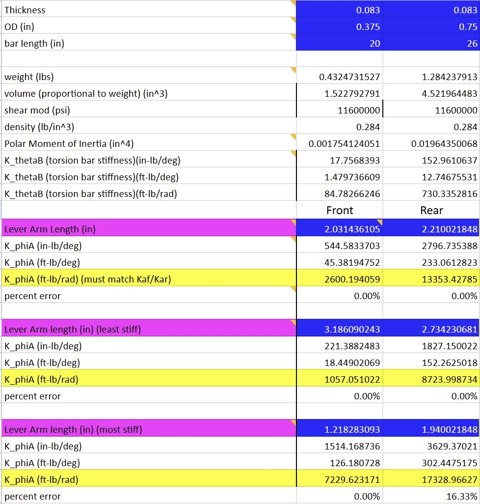
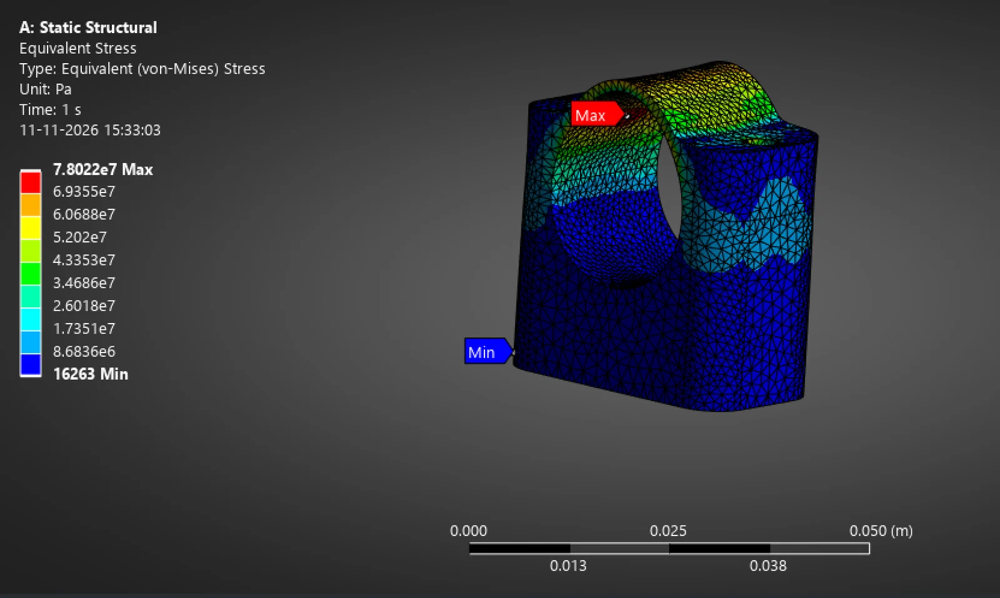

Featured project · Bruin Formula Racing
Mark 12 Anti-Roll Bar
I own the front and rear anti-roll bars on the team-built Mark 12, from concept through manufacturing and validation.

- Role
- Anti-Roll Bar Responsible Engineer, June 2026–Present
- Scope
- Front and rear ARBs
- Tools
- SolidWorks, Motion Studies, Ansys
- Status
- Design and analysis complete, manufacturing next
Results
Two goals for Mark 12
- Motion ratio within 5% of target
- Met across full travel, from droop to compression, at the least-stiff, default, and most-stiff settings (Fig. 2). I got there by optimizing the drop-link pickup point on the bell crank and changing the drop-link lengths (Figs. 3 and 4), checked with SolidWorks Motion Studies.
- Bars in double shear
- Met at the front (Fig. 4). Packaging restrictions kept the rear in single shear.



What changed
Changes from Mark 11
- Front: double shear on the front roll hoop. The new location also indirectly helps the electrical box packaging.
- Rear: curved lever arms. Settings are easier to change, because switching does not mean moving the arm or swapping the drop link. A weighted trade study before detailed design favored the curved shape, 304 to 280 (Fig. 6). Packaging kept the front arm straight.
- Rear: smaller cantilever. With double shear ruled out at the rear, I reduced the cantilever instead.


Design process
From requirements to hardware
-
Complete
Requirements and trade studies
Mapped the motion ratio requirements and ran trade studies on lever-arm shape and bar type (U-bar, Z-bar, or bladed U-bar), choosing a U-bar for both front and rear. Sized the lever arms to the vehicle dynamics roll-stiffness targets, from the least-stiff to the most-stiff setting: 1,057–7,230 ft-lb/rad front and 8,724–14,897 ft-lb/rad rear (Fig. 7).
-
Complete
CAD
Built a detailed SolidWorks model of the lever arms, torsion bars, bearing blocks, drop links, and bearing block tabs.
-
Complete
Analysis
Used Motion Studies to bring the motion ratio within 5% of target, and ran FEA in Ansys on the 6061 aluminum bearing blocks at 905 lbf rear and 318 lbf front, removing material to cut weight while keeping a positive margin of safety (Fig. 8).
-
In progress
Review
Packaging interference checks, design reviews, and drawings for the machined and welded parts.
-
Next
Manufacturing
-
Not started
Assembly and validation
Status as of November 2026. No hardware has been built or tested yet.

